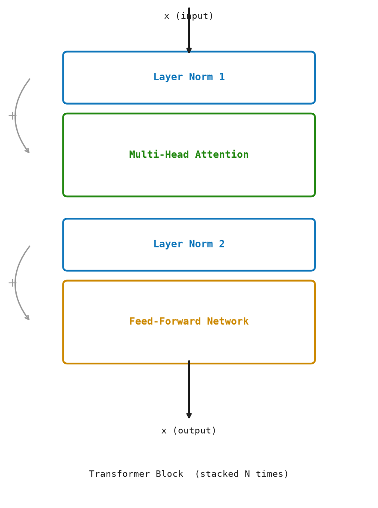
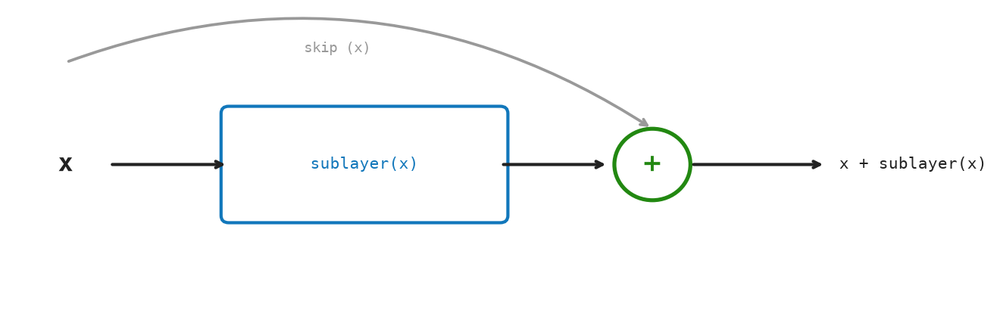

9 The Transformer Block — Putting It Together
“Add what you learn to what you knew. Normalize. Residuate. Even error, treated this way, compounds into precision.”
— Nikola Tesla
A transformer block combines multi-head attention and the feed-forward network with two crucial wiring techniques: residual connections and layer normalization. Without these, deep stacks of transformer blocks would fail to train — gradients would vanish or explode.
A GPT model is simply a stack of N identical transformer blocks. GPT-2 small: 12 blocks. GPT-3 175B: 96 blocks.
9.1 The Idea
A GPT model is a stack of identical blocks — GPT-2 small has 12, GPT-3 has 96. Stacking many layers should make the model more powerful, but in practice it causes two problems: information gets distorted as it passes through many transformations, and very deep networks are notoriously hard to train.
A transformer block solves both problems with two simple ideas.
Residual connections (also called skip connections): instead of replacing a vector entirely, each sub-layer only adds its output to the original. The input is preserved and combined with the new information. Think of it as writing notes in the margin rather than rewriting the whole page. Each layer only needs to learn what to change, not what the whole answer should be. This keeps information flowing cleanly all the way through, even in very deep stacks.
Layer normalization: the numbers inside a vector can grow or shrink unpredictably as the model trains. If they drift too far, the training process becomes unstable. Layer normalization resets them to a consistent scale before each sub-layer processes them. It is a housekeeping step: it does not change which direction the vector points, just how large the numbers are.
Together, these two techniques make it possible to stack dozens of transformer blocks without losing control of training.
9.2 The Math
A single transformer block (Pre-LN variant, used by most modern GPTs):
\[ \begin{aligned} x_1 &= x + \text{MHA}(\text{LayerNorm}(x)) && \text{(attention sub-layer)} \\ x_2 &= x_1 + \text{FFN}(\text{LayerNorm}(x_1)) && \text{(FFN sub-layer)} \end{aligned} \]
This is the Pre-Layer-Norm architecture. The original “Attention Is All You Need” paper used Post-LN, but Pre-LN is more stable to train and is used in GPT-2 onwards.
9.2.1 Layer Normalization
For a vector \(x \in \mathbb{R}^d\):
\[ \operatorname{LayerNorm}(x) = \gamma \odot \frac{x - \mu}{\sigma} + \beta \]
where \(\mu = \tfrac{1}{d}\sum_i x_i\), \(\sigma = \sqrt{\tfrac{1}{d}\sum_i (x_i - \mu)^2}\), \(\gamma, \beta \in \mathbb{R}^d\) are learned scale and shift, and \(\odot\) is element-wise multiplication.
Math Minute — Variance and Standard Deviation
The variance of a set of numbers \(\{x_1, \ldots, x_n\}\) measures how spread out they are: \(Var = (1/n) \sum_i (x_i - \mu)^2\) where \(\mu\) is the mean. The standard deviation \(\sigma = \sqrt{Var}\) is in the same units as the original values. Dividing by \(\sigma\) makes the spread equal to 1 — “standardizing.”
9.3 The Residual Stream
A powerful way to understand the GPT architecture is through the lens of the residual stream (Elhage et al., Anthropic 2021):
The input embedding is injected into a “stream” — a vector of dimension d per token. Each transformer block reads from this stream (via attention and FFN) and adds back to it (via residual connections). The stream carries information across all blocks.
stream⁰ = token_embeddings + positional_encodings [T × d]
stream¹ = stream⁰ + MHA(LN(stream⁰))
stream¹ = stream¹ + FFN(LN(stream¹))
stream² = stream¹ + MHA(LN(stream¹))
stream² = stream² + FFN(LN(stream²))
⋮
streamᴺ = final outputThis view clarifies that attention heads and FFN neurons are all writing to the same shared workspace.
9.4 The Matrix: Worked Example
Let T = 2, d = 4.
Input embedding (position-encoded):
x = stream⁰[0] = [1.0, -0.5, 0.8, -0.2]LayerNorm step:
μ = (1.0 - 0.5 + 0.8 - 0.2) / 4 = 0.275
σ² = [(1.0-0.275)² + (-0.5-0.275)² + (0.8-0.275)² + (-0.2-0.275)²] / 4
= 0.407
σ = √0.407 ≈ 0.638
x_norm = [1.136, -1.215, 0.823, -0.745]
(With γ=1, β=0 for simplicity)MHA produces (let’s say): mha_out = [0.3, 0.7, -0.1, 0.5]
Residual connection:
x₁ = x + mha_out = [1.0+0.3, -0.5+0.7, 0.8-0.1, -0.2+0.5]
= [1.3, 0.2, 0.7, 0.3]Second LayerNorm + FFN + residual (analogously) → \(x_2\).
The key insight: \(x_1\) contains both the original information (from x) and the new information (from mha_out). Nothing is overwritten — the residual stream accumulates.
Figure Figure 9.1 shows the full Pre-LN transformer block with LayerNorm before each sub-layer and residual connections around both.

Figure Figure 9.2 shows the residual stream carrying information forward while gradients flow backward through additions.

9.5 The Code: Transformer Block in Python
Layer normalization shifts a single vector to mean 0, variance 1, then applies learned scale and shift. LayerNorm holds the learned parameters \(\gamma\) and \(\beta\); make_layer_norm initializes them to identity.
@dataclass
class LayerNorm:
gamma: Vector
beta: Vector
epsilon: float = 1.0e-5
def make_layer_norm(d_model: int) -> LayerNorm:
return LayerNorm(gamma=[1.0] * d_model, beta=[0.0] * d_model)
def layer_norm_vector(vector: Vector, params: LayerNorm) -> Vector:
avg = mean(vector)
std = math.sqrt(variance(vector) + params.epsilon)
return [
params.gamma[i] * ((value - avg) / std) + params.beta[i]
for i, value in enumerate(vector)
]layer_norm_matrix applies layer_norm_vector independently to each row of a \([T \times d]\) matrix.
def layer_norm_matrix(matrix: Matrix, params: LayerNorm) -> Matrix:
return [layer_norm_vector(row, params) for row in matrix]TransformerBlock groups the four sub-layers; make_transformer_block allocates their parameters.
@dataclass
class TransformerBlock:
attention: MultiHeadAttention
feed_forward: FeedForward
ln1: LayerNorm
ln2: LayerNorm
def make_transformer_block(d_model: int, num_heads: int, rng: random.Random) -> TransformerBlock:
return TransformerBlock(
attention=make_multi_head_attention(d_model, num_heads, rng),
feed_forward=make_feed_forward(d_model, rng),
ln1=make_layer_norm(d_model),
ln2=make_layer_norm(d_model),
)transformer_block is the Pre-LN residual block; forward_stack threads input through \(N\) blocks.
def transformer_block(x: Matrix, params: TransformerBlock) -> Matrix:
attn_out, _weights = multi_head_attention(layer_norm_matrix(x, params.ln1), params.attention)
x1 = matrix_add(x, attn_out)
ffn_out = feed_forward(layer_norm_matrix(x1, params.ln2), params.feed_forward)
return matrix_add(x1, ffn_out)
def forward_stack(x: Matrix, blocks: Iterable[TransformerBlock]) -> Matrix:
for block in blocks:
x = transformer_block(x, block)
return xDemo. Run with python3 src/python/chapter_demos.py:
def chapter_09(seed: int = 9) -> dict[str, object]:
rng = random.Random(seed)
x = random_matrix(3, 8, rng)
block = make_transformer_block(8, 2, rng)
normed = layer_norm_matrix(x, make_layer_norm(8))
output = transformer_block(x, block)
return {
"normed_shape": (len(normed), len(normed[0])),
"output_shape": (len(output), len(output[0])),
}9.6 Why N Blocks?
A single transformer block has limited capacity. Each block:
- Runs one round of attention (all heads) — mixes information globally
- Runs one FFN per position — processes each token’s updated representation
But complex language tasks require many rounds of computation. By stacking N blocks, the model builds increasingly abstract representations:
- Early blocks: local patterns, syntax, common phrases
- Middle blocks: semantic roles, entity tracking
- Late blocks: task-specific reasoning, pragmatics
The residual stream carries information across all blocks. Later blocks can read from and write to everything earlier blocks computed.
9.7 Key Takeaways
- A transformer block =
MHA → residual → LN → FFN → residual → LN(Pre-LN ordering). - Residual connections let gradients flow directly and prevent vanishing gradients.
- Layer normalization keeps activations at mean 0, std 1 within each sub-layer.
- The residual stream is the shared workspace that all blocks read from and write to.
- GPT stacks
Nidentical blocks; capacity scales withNandd.
What’s next? After N blocks, we have a final matrix \(X_{\text{final}} \in \mathbb{R}^{T\times d}\). Each row is a rich representation of the corresponding token in context. The last step: turn the final vector for position T into a probability distribution over the vocabulary — that’s vocabulary projection in Chapter 8.